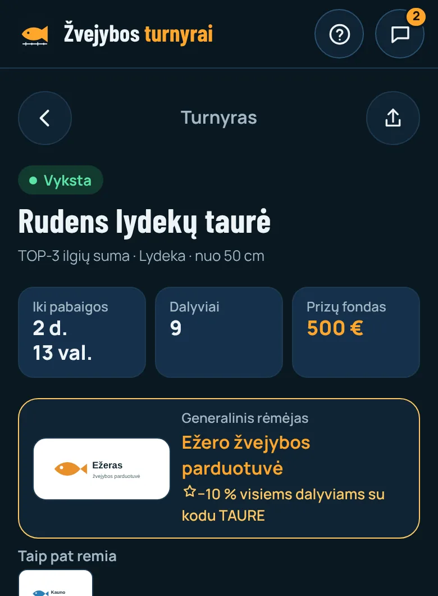
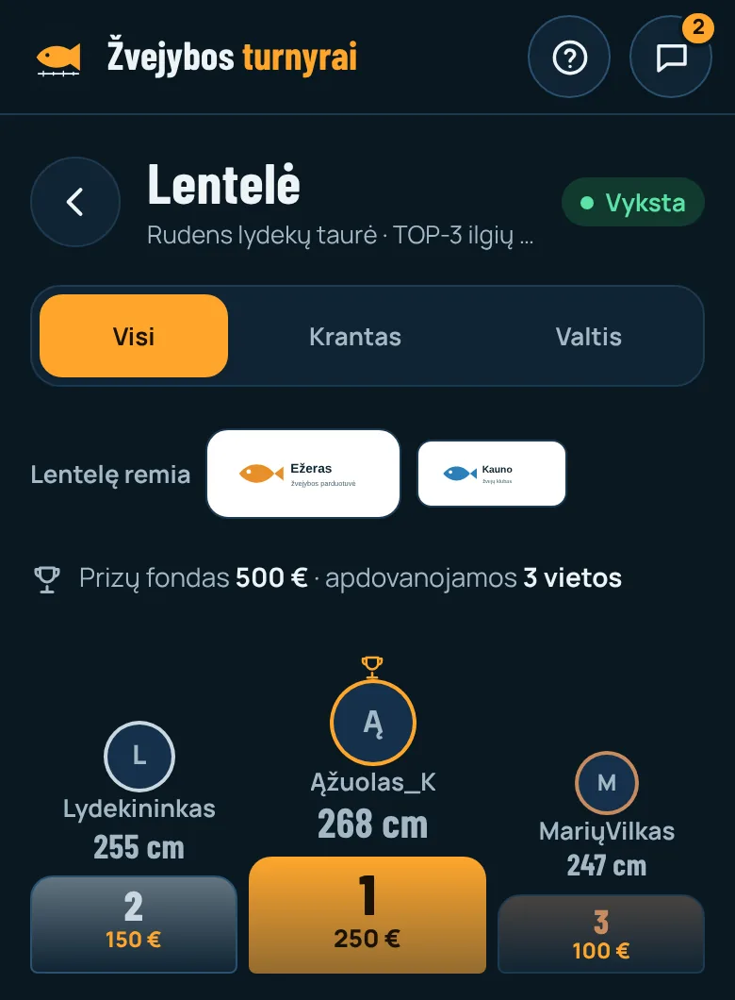
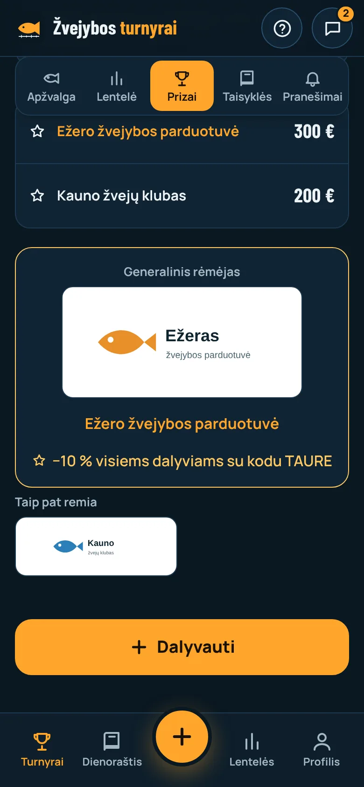
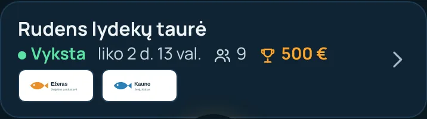
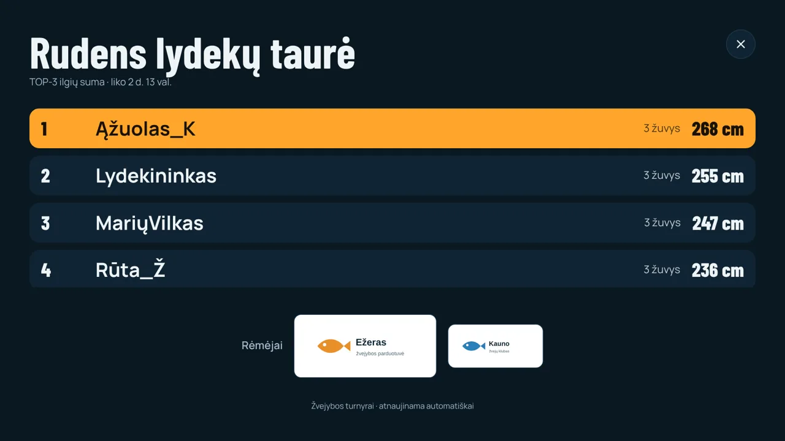
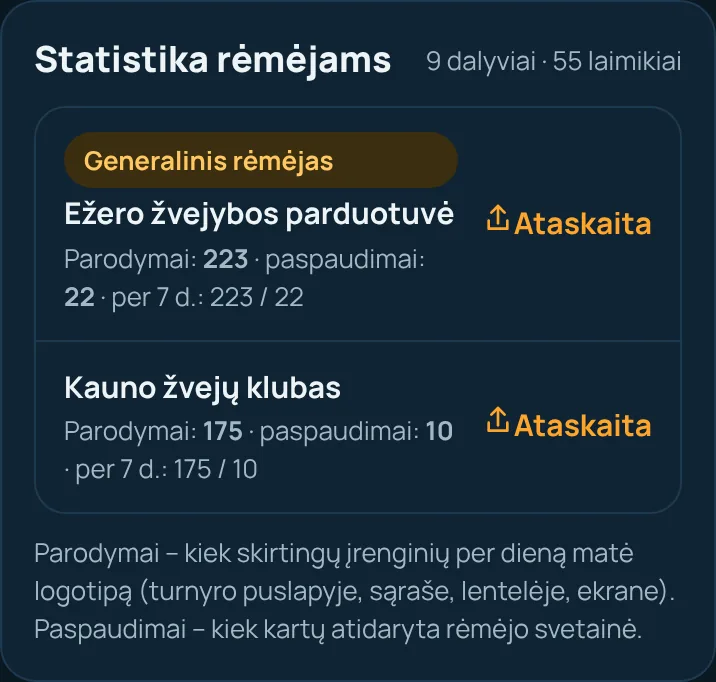

1Turnyro puslapis
Pačiame viršuje – generalinio rėmėjo logotipas, pavadinimas, nuoroda į jūsų svetainę ir pasiūlymas dalyviams, pvz. „−10 % su kodu TAURE“.
„Žvejybos turnyrai“ – programėlė, kurioje žvejai varžosi telefonu: fotografuoja laimikį prie liniuotės, stebi gyvą lentelę ir kovoja dėl prizų. Jūsų logotipas – turnyro puslapyje, lentelėje, prizuose ir didžiajame renginio ekrane.
Visur, kur dalyviai žiūri turnyro metu. Logotipą organizatorius įkelia per minutę – jis iškart matomas visiems, net jei turnyras jau vyksta.

Pačiame viršuje – generalinio rėmėjo logotipas, pavadinimas, nuoroda į jūsų svetainę ir pasiūlymas dalyviams, pvz. „−10 % su kodu TAURE“.

Dažniausiai atidaromas ekranas – dalyviai tikrina, kas pirmauja. Virš lentelės – „Lentelę remia“ ir jūsų logotipas.

Prizų skiltyje rodomas jūsų įnašas į prizų fondą ir didelė generalinio rėmėjo kortelė – žvejai mato, kas dovanoja prizus.

Logotipai matomi jau turnyrų sąraše – dar prieš žvejui atidarant turnyrą ir užsiregistruojant.

Organizatorius rodo lentelę per televizorių ar projektorių stovykloje ir apdovanojimuose. Rėmėjų logotipai visada matomi apačioje, generalinio – didžiausias.
Ne vienas paspaudimas reklamoje, o kiekvieną dieną, kai dalyviai tikrina lentelę ir registruoja laimikius.
Pasiūlymas dalyviams su nuolaidos kodu – rėmimas virsta apsilankymais jūsų parduotuvėje.
Ataskaitoje – kiek kartų logotipas parodytas ir kiek kartų atidaryta jūsų svetainė.
Jūsų įnašas į prizų fondą rodomas prie prizų – žvejai žino, kas jiems dovanoja.
Auditorija – žvejai, kurie realiai žvejoja ir perka įrangą. Jokio atsitiktinio srauto.
Reikia tik logotipo ir nuorodos. Pakeitimai matomi iškart – ir turnyro metu.

Organizatorius mato kiekvieno rėmėjo rezultatus ir vienu mygtuku nusiunčia jums ataskaitą.
Paveikslėlyje – demonstracinis turnyras su sugalvotais rėmėjais ir pavyzdiniais skaičiais.
Abiem lygiams galima prisidėti prie prizų fondo – įnašas rodomas prie prizų. Programėlė pinigų neperveda: prizus įteikia organizatorius arba rėmėjai.
PNG su permatomu fonu (tiks ir JPG) ir nuorodą į svetainę ar el. parduotuvę.
Nuolaida dalyviams (iki 140 simbolių) ir, jei norite, įnašas ar prizai turnyrui.
Logotipą įkeliame per minutę, o po turnyro gaunate ataskaitą su skaičiais.
Taip. Organizatorius įkelia logotipą bet kada, ir jis iškart matomas visiems dalyviams.
Vienas įrenginys – vienas parodymas rėmėjui per dieną, kad ir kiek kartų žvejas atidarytų turnyrą. Taip skaičiai nepasipučia.
Geriausia PNG su permatomu fonu. Tiks ir JPG ar WebP – programėlė pati sumažina ir pritaiko dydį.
Ne. Prizus įteikia organizatorius arba rėmėjai. Programėlė rodo, kas laimėjo, ir padeda susisiekti su laimėtojais.
Bet kuriame telefone per naršyklę – nieko diegti nereikia. Pradedame Lietuvoje.
Parašykite – atsiųsime turnyrų planą ir parodysime, kaip atrodys jūsų logotipas programėlėje.
zvejybosturnyrai@gmail.com